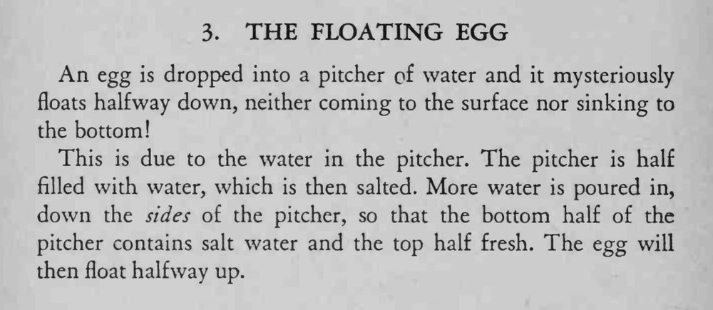

鸡蛋放进水壶，不沉底也不浮到水面，而是悬在水中间。
加清水一定要沿壁慢慢倒，别把盐水层冲混；盐要加到足够浓。

An egg is dropped into a pitcher of water and it mysteriously floats halfway down, neither coming to the surface nor sinking to the bottom! This is due to the water in the pitcher. The pitcher is half filled with water, which is then salted. More water is poured in, down the sides of the pitcher, so that the bottom half of the pitcher contains salt water and the top half fresh. The egg will then float halfway up.